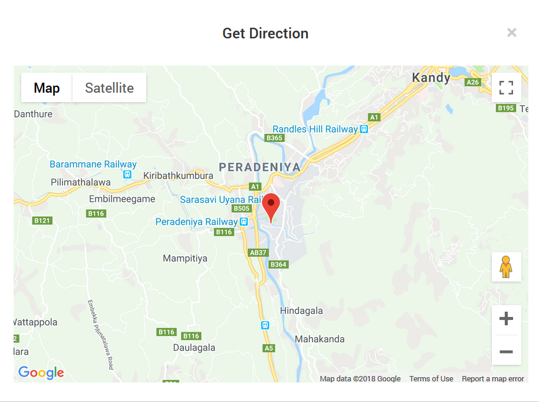

The University of Peradeniya is a state university in Sri Lanka, funded by the University Grants Commission.[2] It was established as the University of Ceylon in 1942.
The University of Peradeniya hosts nine faculties (including the newly added Management faculty), two postgraduate institutes, 10 centres, 73 departments, and teaches about 11,000 students in the fields of Medicine, Agriculture, Arts, Science, Engineering, Dental Sciences, Veterinary Medicine and Animal Science, Management and Allied Health Science.[3] It claims to have the largest government endowment by a higher education institution in Sri Lanka, based on its large staff and faculties/departments
Vice-Chancellor: Prof. Upul B.Dissanayake
Chancellor: Prof. P.W. Epasinghe
Founded: 1942
Campus: Suburban; 700 Hectares
Location
On a site that touches the lower slopes of the lush Hanthana mountain range, University of Peradeniya is known for its natural environment.[citation needed] It has inspired intellectuals like Prof. Ediriweera Sarachchandra, Sri Lanka's premium playwright.[9] The university is in the Central Province, 8 km from the sacred city of Kandy (the historic capital of the last kingdom of Sri Lanka) and about 110 km from Colombo. A tourist attraction, Botanical Garden of Peradeniya is close by.
The university spans nearly 700 hectares in the Mahaweli flood plain. Most of the area remains afforested. Climate around the university is mild, and the temperature fluctuates between 18 and 30 degrees Celsius.
The main entrance to the university is through Galaha road. The Faculty of Engineering is on one side of the Mahaweli River and all other faculties are on the other side. The Akbar bridge links the two banks of the river. Considered as a marvel of civil engineering, it was designed by late Prof. A. Thurairajah (Dean of the Faculty of Engineering, 1975–77 and 1982–85) and built by the first batch of the faculty, in the year of its inception.
The Sarasavi Uyana railway station is on campus. Another bridge known as Yaka Paalama links the railway to the other bank. Daily shuttle bus services operate from Kandy to Galaha junction and Kandy to the university.
A separate subcampus was established in 1968 at Mahailuppallama, North Central province for the Faculty of Agriculture.[10] Separate residential facilities are provided to this subcampus
History
The proposal for the establishment of University of Ceylon, the first university of Sri Lanka (the predecessor of University of Peradeniya) goes back to 1899.[3] But no progress was seen until the formation of Ceylon University Association in 1906 under the guidance of Sir Ponnambalam Arunachalam, Sir James Peiris and Sir Marcus Fernando. Its request for a European-style university in Sri Lanka was partially granted by the British rulers with the formation of Ceylon University College on 1 January 1921.
The University Council, through which the administration of the Ceylon University College was done, appointed committees to plan the academic activities of a future university.[3] It made suggestions to build the university in Bullers Road (now Bauddhaloka Mawatha) in Colombo, but it was disputed by politicians. To resolve the conflict, the then Governor Hugh Clifford appointed a committee headed by Justice M.T. Akbar on 20 December 1926. It suggested that the proposed university should be unitary, residential and outside Colombo. Another committee was appointed in 1928 with Sir Walter Buchanan-Riddel as chairman. It proposed a site at Aruppola, in the Dumbara Valley close to Kandy. Dr. S.C. Paul and Andreas Nell pointed out disadvantages in the site and proposed a larger one at Peradeniya.
In 1938 the government acquired the plot and developed an area about 150 hectares (out of 700 hectares) to create the University Park.[11]
Although the site was acquired, no plans were made to establish the university until 1941. With the arrival of Sir Ivor Jennings, as the second principal of the Ceylon University College, establishment plans were put into effect. He stressed the urgent need to move the university to Peradeniya to the Minister of Education C. W. W. Kannangara and took the initiative in the process. Thus he is considered the forefather of the University of Peradeniya
Map of University of Peradeniya

|